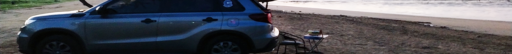
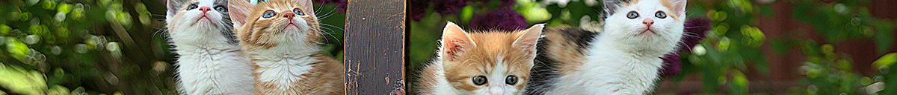
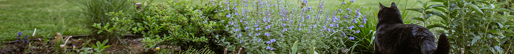

A Page Just For Me
This page is dedicated to everything I love in life and the things that inspire me. My family and friends are a big part of my creative world because they always bring laughter, love, and funny memories that I can capture through art. Whether we are spending time at the beach, hanging out together, or just being silly, those moments give me ideas that feel personal and full of emotion
Felines, flowers, and flying are also a big part of what inspires me. I love cats because they are cute, curious, playful, and full of personality, just like the kind of art I enjoy making. Flowers inspire me because they remind me of beauty, growth, healing, and fresh beginnings. I also love to fly and travel because every new place gives me fresh colors, new ideas, and beautiful memories. Together, family, friends, food, felines, flowers, and flying help make my art feel joyful, personal, and alive
Travel and Chill Vibes

Boom Boom at the Beach is all about relaxing, enjoying the view, and making memories by the water. I love travel because every place gives me a new feeling, a new color, and a new story to bring back into my art. Whether I am at the beach, in the air, or visiting someone I love, travel helps me feel free, inspired, and happy.
My Top Travel Destinations
- Texas - Texas is special to me because the love of my life is there. It has become a place connected to love, new memories, laughter, and the beautiful life we are building together.
- Panama - Panama will always be amazing to me because it is home. The beaches, food, music, family, and bright tropical beauty all inspire my heart and my creativity.
- Canada - Canada is on my list because I love the cold, cozy weather, and peaceful winter feeling. It makes me think of warm clothes, hot drinks, and quiet moments that feel like a painting.
- Anywhere in the Air - I love flying because it feels like freedom. Being above the clouds reminds me that the world is big, beautiful, and full of new places waiting to be explored.
- Beaches, All of Them - Beaches are my happy place. The sound of the waves, the sand, the breeze, and the sunsets give me calm energy and beautiful ideas for my art.
Furry Friends

Cats bring so much joy and personality into my life. They can be sweet, dramatic, curious, sleepy, and playful all in the same day. I love how every cat has its own attitude, and that makes them a perfect source of inspiration for fun, cute, and expressive art.
5 Fun Facts about Cats
- Cats use their tails, ears, and eyes to show how they are feeling.
- Most cats love warm, cozy places because it helps them feel safe and relaxed.
- Cats are very curious and often explore anything new in their space.
- Every cat has a unique personality, from shy and sweet to bold and bossy.
- Cats can be playful one minute and ready for a nap the next.
Natures Art

Nature is one of the most beautiful forms of art. Flowers inspire me because they show growth, beauty, healing, and fresh beginnings. A rose, a garden, or even a small bloom can remind me that creativity takes time, care, and patience before it fully opens.
How well do you know your garden?
- Rose
- A rose is often connected to love, beauty, and emotion. It inspires soft colors, gentle details, and artwork that feels meaningful.
- Sunflower
- A sunflower reminds me of happiness, sunshine, and confidence. It is bright, bold, and always reaches toward the light.
- Orchid
- An orchid feels elegant and tropical. Its shape and colors make it a beautiful inspiration for graceful and delicate artwork.
- Lavender
- Lavender represents calm, peace, and relaxation. It inspires soft purple tones and peaceful designs that feel soothing.
- Hibiscus
- Hibiscus flowers remind me of tropical places, warm weather, and colorful outdoor beauty. They are perfect for art that feels bright and full of life.